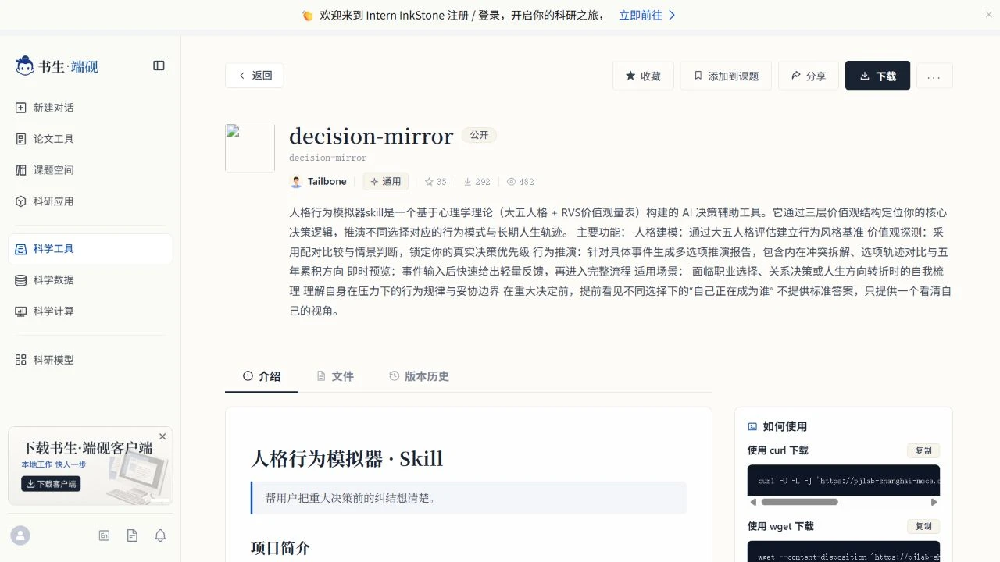

01 — 07向下探索 ↓
02 / COVER DESIGN — LANDSCAPE
横版封面
视频与直播封面。
一个开场判断：谁在说话、说什么、为什么此刻要听。
用强对比的字形与色彩，在 16:9 的宽画面里建立第一眼。
 你等的公交，为什么永远最慢 01 / 03
你等的公交，为什么永远最慢 01 / 0302 — 07继续探索 ↓
 熬夜是自由的赎金 06 / 08
熬夜是自由的赎金 06 / 0803 — 07继续探索 ↓
 深蓝红色水面 03 / 05
深蓝红色水面 03 / 0504 — 07继续探索 ↓
05 — 07继续探索 ↓

人格行为模拟器 书生国智科探挑战赛06 — 07继续探索 ↓
07 / LET'S WORK TOGETHER
期待同行
视频与直播封面、视觉设计与交互。如果你正在找人把这些做出来，可以直接联系我。
简历：查看简历 ｜ 邮箱：3458318328@qq.com
回到起点07 — 07THANK YOU FOR VISITING